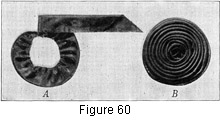
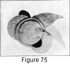
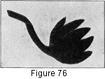

1930—Millinery Processes
by Carlotta M. Brown
FLOWER AND FRUIT ORNAMENTS
The converting of small pieces of silk, velvet, crepe, georgette, organdie, and ribbon into flower or fruit ornaments is most fascinating and profitable. A knowledge of this work is of value not only in the workrooms of large shops but also in the class laboratory and the home. Between home-makers or members of a class small pieces of different materials may be exchanged and fashioned into decorations. This is a good way to cut the cost of hat trimmings.
FLOWER ORNAMENTS
Flower ornaments are not only appropriate for hat trimmings, but many of them are equally lovely on other wearing apparel. The conventional designs, which are always the most desirable, are made from a variety of petal-shaped pieces. The placing of the petal and the type of petal used depend upon what is preferred in the finished flower. The types described in this section form an adequate foundation for all flower construction ; they are all practical and not fads of a season.
Rolled-petal Rose
Figure 55. Rose made of rolled petals with square base. A, square from which petal is made; B, first stetp in rolling petal; C, completed petal, with base cut square; D, completed rose, built on crinoline foundation.
The rolled petal is much in favor, for it is most simple in construction, has a graceful but firm edge, and may be made in large sizes without the appearance of bulk. Each petal of Fig. 55 is made from a 3-inch square of taffeta. Since the number of petals in different flowers vary so greatly, it is not always possible to tell how many petals will be needed for the completed flower. For convenience a goodly number should be made before starting to build the flower. The steps in the construction of a petal are as follows:
Cut a 3-inch square on the straight of the material. This is important if successful results are to be secured, because the roll, which is made from the upper left-hand point toward the center, must be on a perfect bias.
Place a heavy millinery needle or a fine steel knitting needle at the upper left-hand point of the square. Gently press the point of the fabric over the needle and roll the material firmly against the needle. The needle may be left in the roll until the opposite points which form the triangle are reached, or it may be removed after the first three or four turns of the roll have been made, in which case the material must be held firmly while the roll is being completed.
Form the petal by holding the rolled edge in the right hand, and with the left hand laying the base of the petal in small folds. When this is completed, secure the petal by wrapping with several windings of thread. Cut away the material which extends beyond the thread line, leaving just enough for a secure fastening. This makes the base of the petal very compact and square (Fig. 55, C).
Cut a circle of crinoline for the foundation of the flower. The size of this circle varies according to the size of the rose desired. A circle two or three inches in diameter makes a rose of ordinary size. The circle may be cut as large as the diameter of the finished flower, using the circumference of the circle as the guide line for the outer edge of the first layer of petals and then trimming the crinoline away near the first stitching after the flower is finished. Or the crinoline circle may be cut smaller, using the outer edge of the circle as the point at which the first row of petals is attached.
Whatever the size of the crinoline base, in attaching the first row of petals be careful to place each petal on a straight line from the center of the circle to the circumference of the circle, thus insuring a perfect outer line. The second row is placed so that the petals are not in a straight line with the first row (that is, petal is not placed upon petal), but over the lower rolled edges of two petals, resembling greatly the succession of petals in a rose. Continue adding row after row until the center is reached. The center then may be finished by lapping two petals back upon themselves and fastening them, or by the use of any decoration, such as wooden beads, floss, chenille, or yarn.
Very lovely color combinations may be worked out by alternating colors in the rows of petals. Also an equal number of squares may be cut from two different colors, then each square cut into two triangles, and the two colors joined to re-form the square. When this square of combined colors is rolled, one color forms the roll and the other the background (Fig. 56).
Figure 56. Combination petals. A, showing triangles of two different colors joined to form square; B, showing two petals, one with the light-colored edge roll with a dark background, the other with the colors reversed.
Fig. 57 presents another problem in the rolled petal.
Figure 57. Rose made of rolled petals with base spread apart. A, shaped piece from which petal is made; B, first stetp in rolling point towawrd center, with gathering thread in place; C, petal rolled with thread drawn up; D, completed flower.
Proceed with the cutting of the square as in Fig. 55. Trim one point of each square to form a curved base.
Along this curved base place a line of running stitches, but do not pull the thread up and fasten until after the outer roll is turned.
Roll the point toward the center (Fig. 57, B), holding the rolled edge securely between the finger and thumb of the left hand. Draw up the thread to about half the length of the curved base, and secure. The base will be much broader than in C, Fig. 55, forming an open, flatter petal.
Cut a foundation circle of crinoline as described on page 71. Place the first row of petals around the edge of the crinoline circle, keeping the base of each petal spread apart, each succeeding petal lapping the preceding petal one half its width. When this first row is placed, start the second row by placing the edge of the petal slightly below but at the center of the base of the petal above. Continue filling in row after row until the center is reached. Finish the center with three small petals or some other decoration.
Figs. 55 and 57 are cut from squares of the same size and have the same type of rolled edge, but the finish at the bottom of the petal and the different placing of the petal make a very different type of flower when completed.
Rose formed of Soft, Upright Petals
 Cut
a strip of paper 5¼ inches long and 2¼ inches wide. Fold
on the lengthwise line; fold again, bringing the
ends together. Start cutting at the lower right-hand cut edges, and slope
gradually until the top of the upright fold is reached. Open, and place
the paper pattern on the fabric, cutting as many exact duplicates as will be
needed, with the length of the petal on the straight of the fabric (see
Fig.
58, B).
Cut
a strip of paper 5¼ inches long and 2¼ inches wide. Fold
on the lengthwise line; fold again, bringing the
ends together. Start cutting at the lower right-hand cut edges, and slope
gradually until the top of the upright fold is reached. Open, and place
the paper pattern on the fabric, cutting as many exact duplicates as will be
needed, with the length of the petal on the straight of the fabric (see
Fig.
58, B).
Figure 58. Rose made of soft, upright petals. A, folded pattern of petal; B, unfolded petal; C, petal folded in half and base shirred; D, cimpleted rose.
Fold the petal on the lengthwise thread of the material, bringing the curved sides (which are the raw edges) together. Attach these edges with a row of running stitches, pulling the stitches up so that the base of the petal measures 3 inches. Since the soft outer edge of this type of petal is on the straight instead of the bias of the fabric, each petal has a decidedly cupped appearance when placed around a circular foundation.
Cut a circular crinoline foundation. When placing the petals for the finished flower, proceed exactly as in Fig. 57 except that the petal edges should be placed upright instead of flat. The petals in this rose, like the rolled petals, may be made in a variety of sizes. If a shallow rose is desired, the petals may be decreased in width, but with length added; if a deep rose is wanted, the width of the petal may be increased, always using individual judgment as to the length of the base of the petal if these changes are made.
Soft Folded Rose
Figure 59. Two types of folded roses. A, crinoline base with cotton-padded center circle of silk; B, bias strip to be used for fold; C, soft folded rose; D, tailored folded rose.
Decide upon the size for the finished rose and cut a circular crinoline base according to this measurement. The base of the rose (Fig. 59, C) is 2¾ inches in diameter.
Upon this crinoline foundation place a small amount of cotton for the center padding (A). Next cut a circle of fabric, the exact size of the crinoline circle. Attach the two circles with a basting stitch around the outer edge.
Cut bias strips 1½ inches wide to form the center folds, the three extreme outer folds being 2½ inches wide, the extra inch forming the finish over the edge. These bias strips and the center covering may be of the same material or of contrasting materials and colors.
When the crinoline base is prepared, start placing the folds so that a perfect triangle is formed at the center of the rose, with each fold cut off evenly with the outer edge of the circle. Continue placing these folds slightly below each other, and rather loosely for a soft effect (always keeping the perfect triangle in mind), until the base is filled and the finish at the outer edge is to be made. The finishing folds are placed (one at a time, as the preceding folds were placed) with the ends brought to the under side of the crinoline base. They should be fastened instead of being trimmed at the outer edge. The raw edge of each finishing fold is caught to the crinoline base.
Tailored Folded Rose
Although the process in making the tailored folded rose is exactly the same as that described for Fig. 59, C, the bias strips are pulled very snug to form the flat, tailored effect, and the center is padded with less cotton. These roses are most effective when several are made in different sizes and grouped as a single ornament. They may be made with centers of various colors, added after the flower is completed or while it is being made. This type of rose is very appropriate for the mourning bonnet or hat, as it is inconspicuous when made in black, yet has dignity because of the regular, folded lines.
Rolled Rose
This type of rose lends itself particularly well to lightweight fabrics, such as satin or soft silk, for it should have a soft, fluffy appearance when completed.
Figure 60. Soft rolled rose. A, first bias fold attached to crinoline foundation; B, completed rose.
Cut bias strips from 2 to 5 inches in width (the strip shown in Fig. 60, A, is 2 inches) and join into one strip of from 1 to 1½ yards in length. Press the seams open and fold the raw edges of the bias strip together, catching with large basting stitches. This permits the winding of the fold into place and keeps it from pulling crooked.
Cut a crinoline foundation (Fig.60, A). This foundation may be wired at the edge with very fine tie wire to hold it firmly in place and to make it possible to shape the flower against the crown without extra sewing. Also the foundation will be neater if it is covered with a piece of satin or silk to match the flower.
Start the rose by attaching the first row of bias to the outer edge of the crinoline. Keep working toward the center, holding the folds so that the edges will roll slightly and give depth to the flower. Continue the fold until the center is nearly filled; then make a small hole in the crinoline foundation through which to slip the end of the fold. This makes a simple but very neat finish. The center may also be decorated with wooden beads or with French knots made of gold or silver thread, heavy floss, or yarn.
Bias-strip, Corded-edge Rose
Figure 61. Rose made of bias rolled petals, with cord at edge. A, cord whipped to edge of petal to form foundation of roll; B, completed rose.
Cut five bias strips of silk 4 inches wide and 5 inches long. To one lengthwise edge of each strip sew a length of cable cord, twine, or yarn so that the silk may be rolled, as soft fabrics will not stay in place when cut on the bias unless some support is afforded (Fig. 61, A). Roll the silk over the cord, turning about three times.
Form the petals by holding the bias fold between the finger and the thumb of the right hand and, with the left hand, folding the bottom of the strip into small folds. Secure by twisting thread around the folds, then cutting away any extra material to form the square base, as in Fig. 56. A small crinoline foundation of not more than 1 ½ inches in diameter is used for this flower; it should be just large enough to attach the base of the petals firmly to it. For the center finish use a twist of silk over cable cord or yarn, working from the outer edge toward the center. More than one layer of petals may be used, as in the other types of rolled roses.
Upright Rose
Figure 62. Upright rose made of rolled petals cut from squares.
Make petals as for Fig. 55. When building this rose, the petals are placed upright in position instead of flat, lapping one over the other in perfect succession. If any form of stamen is to be used, it must be placed in the center before all the petals are in position. The rolled edge of the petal may be placed on the outside or the inside when forming the rose.
Morning-glories
Figure 63. Morning-glories (tailored). A, triangle forming one half of lower; B, completed flower.
Fig. 63 shows a simple type of morning-glory, one that may be placed flat around the crown or on the brim of a hat. Each flower overlaps the one preceding it enough to hide the base of the flower. It also may be used in combination with other flowers, and it may be made of a single color or lined with a contrasting one. Cut a 3-inch square of silk. If only one color is to be used, fold the square into a triangle; if using two colors, cut each square to form triangles and join color to color (Fig. 56, A).
Place the wrong side of the seamed or folded points together, forming another triangle, and seam the raw edges together, leaving at the lower point just enough opening to turn to the right side. Turn the flower, with the facing and the outside in their respective places. Yarn or floss may be knotted to form the center decoration in place of the stiffer type of stamen. Use two or three strands, according to the weight of the floss or yarn, tying knots at intervals of every four inches. Fold, with the knot at the top of each loop.
When one color only is used, the construction is the same as above, except that there is no seam along the bias edge of the first triangle, as in Fig. 63, B.
Morning-glory formed of Shaped Petals
Figure 64. Morning-glory (soft). A, shaped piece forming one petal of flower; B, completed flower.
Cut a strip of paper 5 inches long and 3 inches wide. Fold in half along the length of the strip. Start cutting half an inch from the fold at the lower end of the strip and, sloping gradually outward, when 1 inch from the opposite end of the strip make a decided flare to the top edge of the petal pattern. This forms the curved outer edge of the flower.
Six of these petals are made and joined with French seams. The outer edge is bound with a narrow bias or straight binding. Fine tie wire may be run in each seam if desired; especially is this convenient where the flower is to stand slightly away from the brim or the crown of the hat. The binding at the outer edge may be made of contrasting fabric or color. The unfinished ends are drawn together, and a wire is fastened to them to form a stem. This stem is wound tightly with a narrow bias strip of the fabric.
LEAVES
The leaves used for trimming hats come in a great variety of shapes, sizes, and materials. They may be cut of a single thickness of the material, with the edges unfinished or bound with narrow bias bindings; they may be cut double thickness, with the seam at the outer edge so that it may be turned and pressed flat; they may be made with stiffening or without; and they may be shirred or folded into the desired shape. The size, shape, and width are all determined by the type of hat or the kind of flower with which they are to be used. In fact, the designing of leaf forms is so simple that almost anyone may cut a simple pattern according to his own needs.
 Leaf made from a Folded Square of Fabric
Leaf made from a Folded Square of Fabric

Figure 65. Triangular folded leaf. A, folded square, first step; B, folded into triangle; C, completed leaf.
Cut a 4-inch square of fabric; fold in half, with the fold at the top (Fig. 65, A).
Bring the right-hand point of the folded edge down to the center of the half square. Next bring the left-hand point down to meet the first, being accurate as to the center. This brings all the raw edges at the bottom of the small triangle.
Fold the triangle into a smaller triangle by creasing at the center, where the folds meet. This makes a leaf with a flared bias edge on one side and a straight edge on the other side when the base of the leaf is laid in small folds.
If the leaf is to be left open, as in B, run a thread along the base of the leaf, shirring slightly.
Leaf made from a Folded Bias Strip
Figure 66. Bias-folded leaf. >A, bias strip; B, bias strip folded end to end and edges sewed; C, completed leaf.
Cut a strip of bias 6 inches long and 1½ inches wide, and fold lengthwise.
Double the folded strip end to end. Run a shirr thread along the raw lengthwise edge of the strip where the four thicknesses of the fabric are brought together.
Unfold. The seam will run directly down the center, representing the two halves of the leaf. Pull the shirr thread slightly to form the rounded tip, and fasten the thread.
Where narrow leaves will fit in particularly well, this leaf is always attractive. If bias strips are not possible, this leaf may be made from straight strips, although the finished leaf is somewhat less graceful than the one made from the bias strips. Both width and length may be added to this leaf if necessary.
Shirred Leaf
Figure 67. Shirred leaf. A, cable cord at center of leaf, fullness drawn up; B, finished leaf.
Cut a strip of fabric 6 inches long and 3 inches wide. Fold in half lengthwise over small cable cord. Place running stitches close to the cable cord, but do not catch the cord, as both cord and thread are to be adjusted on a crinoline foundation. This foundation is 4 inches long and 1½ inches wide at the widest point, which is directly at the center (for shaping a crinoline foundation see A, Fig. 58).
Pull the shirr thread to the exact length of the crinoline foundation. Fasten each end and adjust the gathers evenly. Catch the cord to the foundation at several places to prevent its slipping from the center of the leaf. Bring the raw edges of the fabric over the sides of the foundation and secure underneath.
If plain velvet leaves are to be used, they may be veined by heating the point of a nut pick or other pointed instrument and running it over the surface of the leaf to outline the design of a vein. The hot metal merely irons or flattens the nap of the velvet.
Leaves of velvet or silk may also be pasted on a foundation of black or white crinoline, according to the color of the fabric, and faced with the same or contrasting color or material. If this is done, the three layers—top, crinoline, and facing—are pasted together. On this surface lay the pattern of the leaf and cut, leaving the edges unfinished. Patterns for plain leaves are found in Figure 68.
FRUIT ORNAMENTS
Fruit ornaments are made in as many different forms as are flower ornaments. The most popular fruits to imitate, however, are grapes and apples. The grapes are made in cluster formation, resembling the natural fruit. The apples are round in design and decorated in numberless ways. Hand painting, a few French knots placed at the center to represent the bud end of the apple, or strappings of heavy floss or any decorative thread to divide the apple into sections may be used. Both of these fruits may be made from many different materials, ranging in texture from georgette to velvet, felts, and leather.
These fruits may be so used that the trimming is formed entirely of one kind of fruit, or there may be a combination of fruits or even of fruits and flowers. They are made in large and small sizes, the number required depending entirely upon the size of each independent grape or apple.
Grapes
Grapes may be made from very tiny pieces of fabric. It is often possible to use pieces so small, in fact, that they might seem worthless; but when all these small pieces are cut, shaped, and made into clusters, they are most attractive.
Grapes made from Folded Circles of Silk
Figure 69. Grapes made from folded circle of silk. A, circle folded with shirr thread at circular edge; B, shirr thread pulled up ready for attaching grape to crinoline foundation; C, completed cluster of grapes.
Cut a circle of silk 2½ inches in diameter and fold in half, the fold coming on the straight thread of the material. Run a shirr thread along the curved side, or where the raw edges meet.
The grape is formed by drawing the shirr thread into place and leaving the base spread apart to a distance of ½ inch.
Cut a crinoline foundation upon which to build a grape cluster. This foundation should be as long and as wide as the finished cluster is to be; after attaching the grapes any extra crinoline may be trimmed away at the outer edge. Place one grape at the point, attaching this to the crinoline foundation. Follow with two more grapes, and work in this way toward the broad end, overlapping as much as is necessary to conceal the raw edge of the preceding grape. Widen by adding an extra grape to the row and decrease by taking one or more away. Finish by folding a grape over the unfinished edges. Some type of leaf, if preferred, may be added (see Leaves).
Grapes made over Old Buttons or Button Molds
Fig. 70 shows how to make a cluster of grapes from one piece of silk. It also shows that it is not always necessary to make each grape separately.
Figure 70. Showing grapes made over buttons. A, button tied inside of fabric; B, buttons ready for forming of cluster, and outer finish.
Take a piece of silk large enough to form the entire grape cluster without cutting. This, of course, varies according to the size of the buttons to be used. Place a button on the wrong side of the fabric and pull the silk very tightly over it. Secure the silk at the base of the button by twisting the thread tightly around the fullness. Take a stitch to complete the fastening, but do not cut the thread. Place a second button far enough from the first to permit the buttons (or grapes) to be moved about when shaping the cluster. Bring the thread from the first to the second grape and fasten again, leaving the thread slightly slack between each grape. Continue until enough grapes are placed for the cluster. Arrange the buttons close together and in grape-cluster formation. Trim away the extra silk at the outer edge, leaving just enough to turn for the finish.
These grapes may be stuffed with cotton instead of using buttons; but if cotton is used, the greatest care must be taken when molding it into balls to see that the size of the balls is uniform; otherwise the grape cluster will be irregular in the grouping. If many colors are to be used in the cluster, each grape must be made separately and the cluster arranged in the color combination desired.
When using button molds, place an extra thickness of the fabric over the opening on the top of the mold to prevent a ridge showing through the outer covering.
Grapes of Velvet made over Buckram Circles and Padded with Cotton
Figure 71. Grapes made over buckram circle. A, buckram circle placed on fabric circle; B, finished grape; C, completed grape cluster.
Mark circles for a single-grape foundation by placing the base of an ordinary thimble on a piece of buckram and outlining the edge with pencil. Mark as many circles as the worker decides will be required and cut each foundation from the larger piece of buckram. Place these small circles of buckram on the scraps of velvet and cut, allowing from ¼ to 3/8 inch for turning over the buckram foundation for a finish. Run a shirr thread at the edge of the circle; but before this is drawn into place, pad the buckram circle with a small amount of cotton.
Draw velvet over the padded buckram circle and fasten on the under side, forming a neat, smooth edge.
Cut a crinoline foundation as for folded-silk grapes and build the cluster in exactly the same manner. However, as each grape is finished completely before placing it in the cluster, no final finish is required.
Apples
Apples may be made very flat or they may be made well rounded, according to the base upon which they are built or the amount of cotton which is used for the filling. Since the flat apples give the appearance of less weight than do the ones tightly padded with cotton, they may be made larger in circumference, but this circle is seldom over 2 inches in diameter when finished.
Color combinations are easily worked out when planning the groupings. The individual apples may be made of different shades of silk and then arranged artistically on the hat.
 Types of Apples
Types of Apples

Figure 72. Apples. A, soft type of apple with covering shirred into place over cotton ball; B, soft apple divided into sections with heavy floss; C, group of tightly filled small apples with French knot showing bud end of each; D, tightly padded apples divided into sections by lighter-weight floss and French knots at center; E, flat applies built on stiff foundation.
If the apple is to have a soft appearance a stiff foundation is not needed. Decide upon the size of apple desired and then cut a circle of silk accordingly. If the apple is to measure 1¼ inches in diameter when finished, the circle of fabric should be 2½ inches in diameter. A shirr thread is then run around the outer edge of the circle. Take a bunch of cotton and roll into a soft ball. Place this in the center of the fabric circle and draw up the shirr thread to inclose the cotton.
A soft apple may be divided into sections by heavy floss, as in Fig. 72, B; these may also be placed in groups of three or more, as shown in D.
A group of tightly filled small apples may be arranged with black-silk floss used for one French knot to outline the bud end of each apple (Fig. 72, C). These are combined with leaves as a background (see Leaves).
Flat Apples built on a Stiff Foundation
The apples shown in Fig. 72, E, are made from a pair of old white kid gloves, and are ready to be painted in contrasting colors with oil paints. White or black oil-cloth or pieces of leather may be used in the same way. Cut a circle of crinoline or buckram the desired size for the foundation (large and small sizes may be used in the same grouping), pad the foundation slightly, cut the outer circle to form the covering (A), and finish with one or more French knots at the center or toward the edge of the apple, according to the view of the apple to be brought out. Leaves of the same material are added to relieve the plainness of the edge and to give rhythm to the finished ornament.
FELT FLOWERS AND FRUITS
Felt ornaments are the simplest of all trimmings to construct, for the edges need no finishing, as felt does not ravel when cut. Felt comes in many lovely colors; and when these colors are combined artistically, the result is most satisfactory.
Felt Flower
Figure 73. Felt flower. A, petals cut from circle; B, finished flower.
Cut a circle 3¾ inches in diameter from a square of tissue paper. Without unfolding, cut the circumference into symmetrical points which extend on both sides almost to the center of the circle. Using this paper as a pattern, cut the figure from a piece of felt.
Cut a second felt circle, somewhat smaller, of contrasting color and place on top of the first circle. For the center finish of this flower make three piles of felt circles of three or four circles each, the large ones at the base being 1¼ inches in diameter and the others decreasing in size so that when they are piled all the colors may be seen. Cover a wire with yarn and attach it to the back of the flower for a stem.
The colors used in the completed flower shown in Fig. 73 are as follows: the foundation circle, gray-blue; the next circle, soft light green; of the piles of circles for the center finish, the large one is violet, with dark red, Chinese red, and tan in order; tan yarn is used for the center knot and stem.
Felt Grapes
Cut circles the size of a small thimble and sew them in a cluster to a crinoline foundation (Fig. 74). Millinery paste may be used instead of sewing. (For Leaves see page 85.)
Graduated Felt Circles
Circles in three colors may be placed to make artistic trimming. The colors used are violet, gray, and black. Character is added by making the smallest circles of the black material. One leaf is made of gray, the other of violet material The circles are 2 inches, 1¾ inches, 1½ inches, 1¼ inches, and ½ inch in diameter, respectively.
Felt Lily
Cut a strip of felt 4 inches long and 3 inches wide. Shape five pointed lily petals and cut. The center petal is the widest, the two adjoining petals are slightly narrower, and the outer petals are still narrower and shorter. The stem is cut from the same piece of material. This insures a smooth, flat finish.
Conventional Design
Strips may be cut in wing effect and placed on each side of a center which is made of a roll of felt. These may be painted with crayons or oil paints in many shades. Each strip is 2¼ inches in length, with one pointed end and one square end, the square end being placed next to the center (Fig. 78).
Figure 78. Conventional design in wing effect.
Felt Crescents
Any conventional design may be cut from felt and pasted on another fabric to resemble stenciling (see the felt crescents in Fig. 79). A felt petal may be run through the pinking machine to give a variety in edge finishes (Fig. 77).
Figure 77. Felt petal pinked at outer edge to give variety in finish.
Figure 79. Felt crescents to resemble stenciling.
Conventional Felt Ornament
Make a circle 2½ inches in diameter from a square of paper. Before unfolding the paper, cut off the outer ends in square effect. On this first circle build a slightly smaller, plain circle, permitting the squared edges of the preceding circle to show. A third circle has an edge with an inward dip and is yet smaller than the second (see Fig. 80). Cut the felt from these patterns. Finish the ornament with two small squares of different design. Then place the leaves at even distances around the circle. These leaves are cut 2 inches long and ¾ of an inch wide at the widest part.
Figure 80. Conventional felt ornament. A, leaf used at outer edge of ornament with two of the circles cut in unusual edge design; B, completed ornament.
ORGANDIE FLOWERS
Organdie ornaments, like those of felt, are individual. The materials are stiff in texture, and all flower edges are rolled easily either on the straight or on the bias of the material. Organdie flowers are only for the summer season, when organdie or other transparent summer hats are being worn, or as trimmings for light dresses. They may be made after the fashion of all the flowers previously described and in many lovely color combinations.